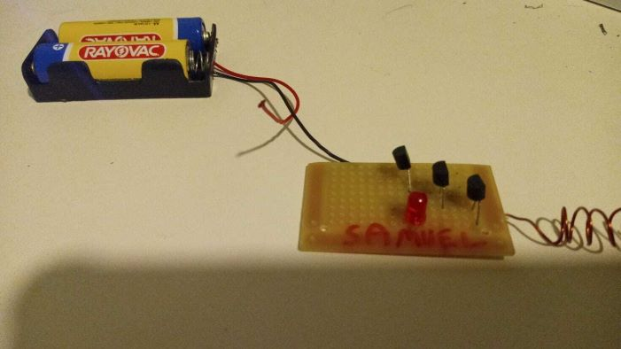
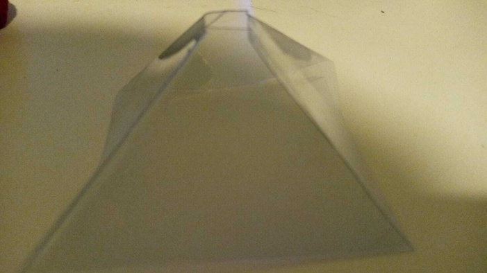
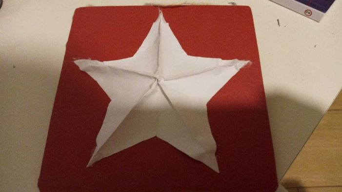
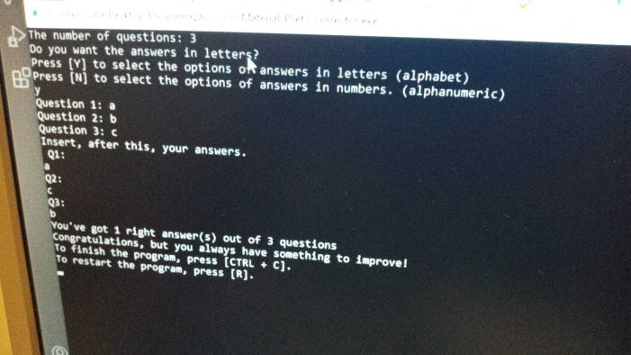
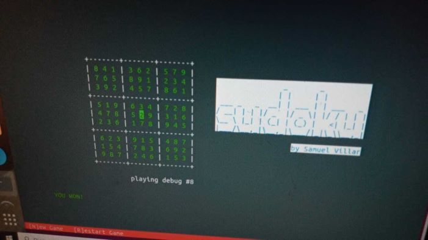

>If you raise a pin to the sky, the area that you see is somewhat composed by 10,000 galaxies.
Welcome to our site, I would like to introduce myself.
I'm Samuel and this is my first official site, and I'd like you to make yourself comfortable here. Anyways, this is the main page, where I'll introduce to you some stuff I've made and show the art which I more love, that is: Science and Technology!
Alright, no more small talk, let's get to the projects!
Science Projects
There are three main projects I'd like to show you that I've made.
Electricity Detector

It was made with a three transitors, aligned and connected together, it would increase the electrical signals, making it easier for the device to detect the electricity on the surroundings. Furthermore, you find out that it also is followed by a red LED, which turns on if it detects any source of eletricity.
Hologram Pyramid

The hologram semi-pyramid is an object whose top is cut off to allow the entrance of light into the surface. Inside, the light, due to the angles of 45 degrees reflect, and form holographic images. In-order for that to happen, it's necessary to have a source of light below the pyramid, giving images for the pyramid to reflect. This, reflect in the human eyes, creating an idea of virtual image, where there are four images being shown at the same time, when there's only one.
Christmas Star

It was a project meant to celebrate the X-MAS! However, it had something different from Jesus' borning star! It had multiple colors, while they changed every span time of one second. So, the star would shine differently in all the spectrums of color. Within the star there was a LED, attached to two batteries which would offer energy to the circuit. The switch botton, however, would work as on and off, opening and closing the circuit energy, therefore, making the star shine or not!
Now, let's go to the Technology Section!
Technology Projects
Test Corrector

I was so lazy to correct my own tests that I made a program that does that to me. It shows how many questions I missed, and if my score was good enough.
Sudoku

This one was more tricky to program, it was a project given by the free course of introduction to CS, by Harvard. It's the basic japanese game, with more effects on it and more levels. Easter egg: The number of levels inside the game is about 2 to the power of 10.
Samuel's Science Spot
I started to program in HTML and CSS very recently, but that didn't discourage me to make my first website with some stuff I really enjoy. Well, this site was made to show somehow what I love, and to develop furthermore my skills in programming.
This was the main page, please, visit the other sections of our site. It would be very cool of you :D
All rights reserved to samuel_company ©
Making People Think! 2022 - Present.